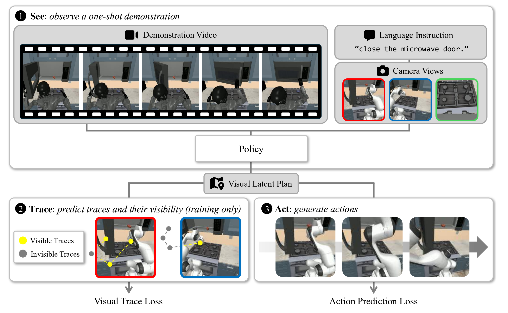
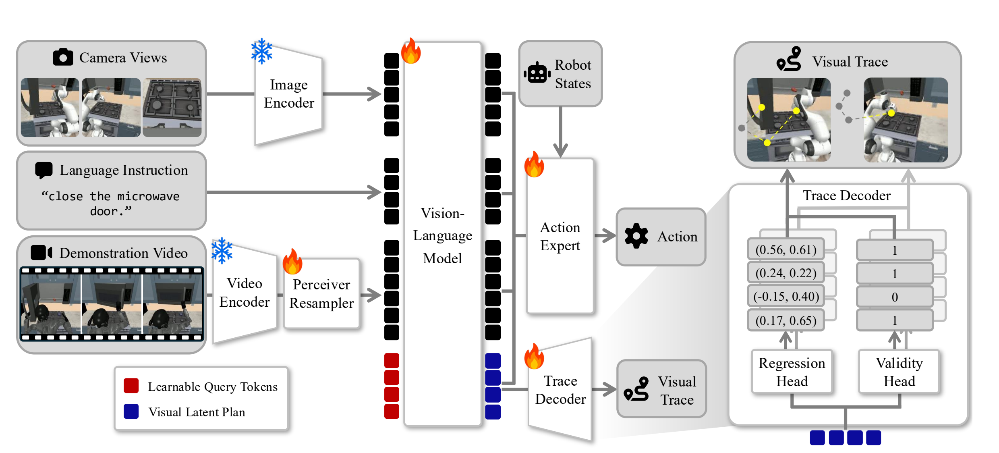
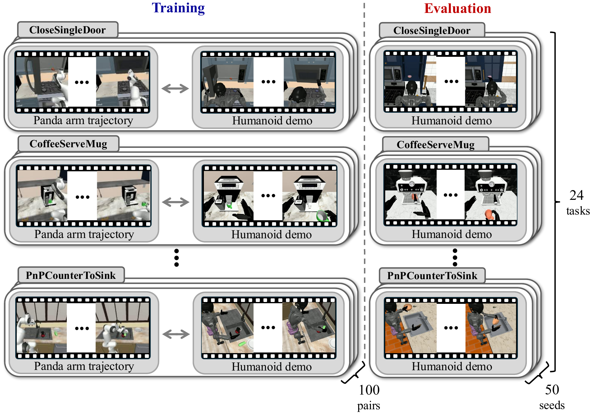

1Video tokens
V-JEPA 2 encodes the demonstration video and a Perceiver Resampler compresses it into a compact set of tokens that join the VLM input.
1Georgia Institute of Technology 2Allen Institute for AI 3Johns Hopkins University 4University of Washington
Conference on Robot Learning (CoRL) 2026

Vision-language-action models (VLAs) are promising general-purpose robot policies, but adapting them to new tasks typically requires costly task-specific teleoperation data. As an alternative, we study one-shot demo-conditioned VLAs, where a robot policy is conditioned on a single demonstration video of an unseen task. We find that existing end-to-end approaches often struggle when successful execution requires precisely localizing small target regions. To address this limitation, we propose SeeTraceAct, a demo-conditioned VLA framework that encourages precise spatial grounding through visibility-aware prediction of future end-effector traces. To enable reproducible evaluation with cross-embodiment demonstrations, we introduce and release RoboCasa-DC, a demo-conditioned extension of RoboCasa that pairs its robot trajectories with newly collected humanoid demonstrations. Experiments on RoboCasa-DC and a real-world benchmark, where a Franka Panda arm is conditioned on human demonstrations, show that SeeTraceAct outperforms baselines, achieving the best success rate across all four RoboCasa-DC settings and improving real-world average success by 9.5 percentage points.

V-JEPA 2 encodes the demonstration video and a Perceiver Resampler compresses it into a compact set of tokens that join the VLM input.
Learnable query tokens attend to the image, language, and video tokens. Their hidden states condition the action expert.
The plan is decoded into future end-effector traces in each camera view. A validity head predicts whether each point is in frame, so off-screen points still carry a signal.
Training only. The trace decoder shapes the plan during training and is discarded at inference, so the deployed policy simply sees and acts.

A demo-conditioned extension of RoboCasa: every Panda-arm trajectory is paired with a GR-1 humanoid demonstration.
Each split trains on 19 tasks and holds out 5 unseen ones.
Public release. RoboCasa-DC is available on Hugging Face.
Best success rate in all four settings, with the largest margin on the precision-sensitive cross-embodiment split.
| Method | Category-balanced split | Precision-sensitive split | ||
|---|---|---|---|---|
| Same-emb demo | Cross-emb demo | Same-emb demo | Cross-emb demo | |
| Vid2Robot | 17.9% | 9.5% | 11.4% | 5.6% |
| UniSkill | 13.0% | 11.3% | 11.7% | 5.6% |
| ViVLA | 14.1% | 9.1% | 8.8% | 7.2% |
| SeeTraceAct (Ours) | 18.9% | 11.6% | 13.2% | 10.8% |
Success rate over the five unseen tasks of each split, 50 episodes per task, averaged over three runs.
A Franka Panda arm conditioned on a single human video, trained on four tasks and tested on six unseen ones.
Success rate over 10 trials per task, averaged over three runs. SeeTraceAct matches or beats every baseline on every task.
Dropping either the demonstration video or trace supervision falls well short of the full model. Neither is enough on its own.
Without the validity head, success drops below even having no trace supervision. Regressing off-screen points hurts.
Image-space traces of the robot beat 3D traces and demonstrator traces.
Trained on all 24 RoboCasa-DC tasks, SeeTraceAct's gain over the strongest baseline grows as the target region shrinks.
@inproceedings{son2026seetraceact,
title = {SeeTraceAct: Visibility-Aware Latent Planning from Cross-Embodiment Demonstration Videos},
author = {Son, Jaehyeon and Kim, Junhyun and Kam, Kyle and Coholich, Jeremiah and Kim, Seok Joon and Kim, Jinhoo and Kim, Chris Dongjoo and Cho, Jaemin and Fox, Dieter and Kira, Zsolt},
booktitle = {Conference on Robot Learning (CoRL)},
year = {2026}
}